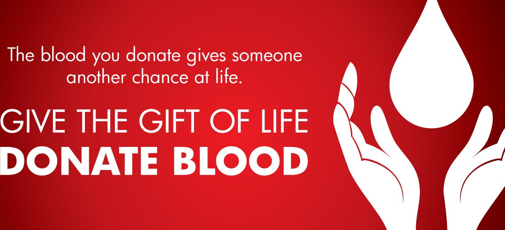

<div id="aboutUs" class="container-fluid">
    <div  class="row">
        <div class="left col-lg-6">
            <div class="heading">
                Our Objective
            </div>
            <!--
            <div class="logo">
                
            </div>
            -->
        </div>
        <div class="right col-lg-6">
            <p>
                Blood is the very essence of a living breathing human being. Blood is a body fluid in humans and other 
                animals that delivers necessary substances such as nutrients and oxygen to the cells and transports metabolic 
                waste products away from those same cells.  A blood donation occurs when a person voluntarily has blood drawn and used for 
                transfusions and/or made into biopharmaceutical medications by a process called fractionation (separation of whole-blood components)

            </p>
            <p>
                We created this site with the user's perspective in mind. It is easy to use and very user friendly.
                The UI was created keeping the mind the age of all the people that would ever have any need for the 
                website.
            </p>
            <p>
                    This project is mainly persons who are willing to donate blood to the patients. Through this system 
                    it will be easier to find the exact blood type and will also be easier to make connections between 
                    donor and the person who requires the blood. 
            </p>
        </div>
    </div>
</div>